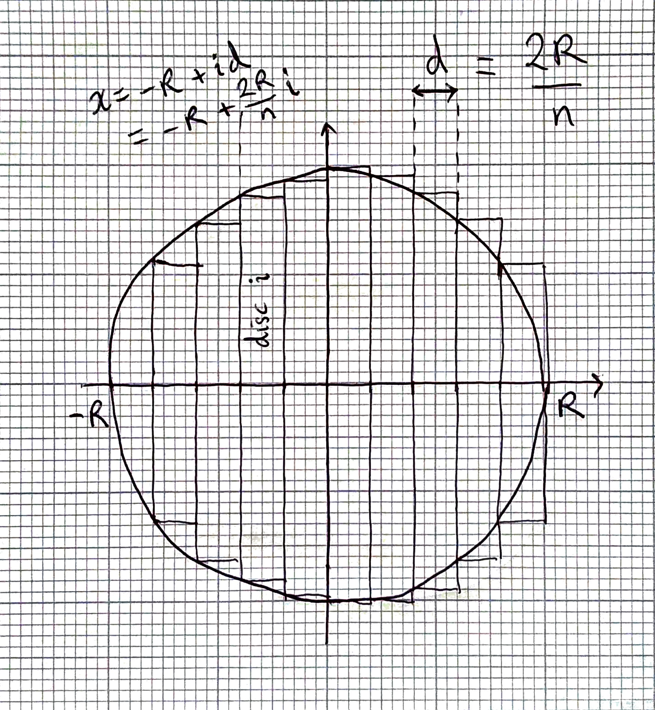

Tutorial 2¶
Question 1¶
# this question is perhaps harder than it intially looks.
# The key is to take it break it down into individual steps before
# starting to write any code.
def print_square(n):
for i in range(n):
print("*", end="")
print()
for i in range(n - 2):
print("*", end = "")
for j in range(n - 2):
print(" ", end="")
print("*")
for i in range(n):
print("*", end="")
print()
def print_rhombus(n):
for i in range(n-1):
print(" ", end="")
for i in range(n):
print("*", end="")
print()
for i in range(n - 2):
for j in range(n - 2 - i):
print(" ", end="")
print("*", end="")
for j in range(n-2):
print(" ", end="")
print("*")
for i in range(n):
print("*", end="")
print()
print_square(5)
print()
print_rhombus(5)
*****
* *
* *
* *
*****
*****
* *
* *
* *
*****
Question 2¶
# It is crucial to understand the importance of the return statement.
# The return statement determines the *output* of the function.
# For 1 and 2 the function shoud return a value of True or False.
# 1. The expression n % m == 0 is True if n is divisible m; otherwise false
def is_divisible(n, m):
return n % m == 0
# 2. Construct a loop and *immediately* exit the function as soon as
# a value which divides into n. Only if no such value is found will the final return statement be reached.
def is_prime(n):
for m in range(2, n):
if is_divisible(n, m):
return False
return True
def number_of_primes(n):
i = 0
for m in range(2, n+1):
if is_prime(m):
i += 1
return i
print("4 is divisible by 2:", is_divisible(4, 2))
print("4 is divisible by 3:", is_divisible(4, 3))
print("7 is a prime number:", is_prime(7))
print("8 is a prime number:", is_prime(8))
print("Number of prime numbers up to 10:", number_of_primes(10))
print("Number of prime numbers up to 11:", number_of_primes(11))
4 is divisible by 2: True
4 is divisible by 3: False
7 is a prime number: True
8 is a prime number: False
Number of prime numbers up to 10: 4
Number of prime numbers up to 11: 5
Question 3¶
This question is designed to allow you to combine loops and functions together. It is a very typical example of how we might perform a computation in scientific computing. If you couldn’t complete it this time it would make excellent exam preparation!
We need to calculate the sum of the areas of the discs in the following diagram.
{kind=link}
First, write a function
vol_discwhich returns the volume of a single disc. Writing the function first allows to test this code separately from the remaining complexity of the problem.
# 1.
def vol_disc(R, x, dx):
r = (R**2 - x**2)**0.5
return 3.14159 * r ** 2 * dx
# We hardcode the value of pi here. Later you will learn about numpy, a mathematical
# library containing many useful functions, including a value for pi.
Next, calculate the sum of 10 discs. The width of each is 2 / 10.
There are 10 discs, with i running from 0 to 9. Left hand edge of disc i is at position x=-1 + (i/10) * 2.
# 2. We first set variables containing values we will use in the computation.
vol = 0
d = 2 / 10 # width of each disc
for i in range(10):
x = -1 + (i / 10) * 2 # the x position of the left-hand edge of each disc
vol += vol_disc(1, x, d)
print("Volume of sphere radius 1:", vol)
# let's check it against the formula vol = (4/3)*pi*r**3
print("4/3 * pi * 1^3:", (4/3) * 3.14159)
Volume of sphere radius 1: 4.1468988
4/3 * pi * 1^3: 4.188786666666666
Extend to a sphere of radius
Rdivided intondiscs. Left hand edge of disciis at positionx = -R + (i / n) * 2 * R.
def sphere_vol(R, n):
vol = 0
dx = 2 * R / n
pi = 3.14159
for i in range(n):
x = -R + (i / n) * 2 * R # x is the position of the left-hand edge of each disc
vol += vol_disc(R, x, dx)
return vol
This is another application of a
whileloop. We need to terminate once the difference between consecutive estimates is less than the tolerance of \(1 \times 10^{-4}\).
To calculate this, we need to keep track of the previous estimate using a variable vol_prev then calculate the difference. But note that the difference could be positive or negative, which is why we have the condition diff > 1e-4 and diff < -1e-4. When we learn about numpy we can instead use the function np.abs.
diff = 1
vol = 0
n = 2
while diff > 1e-4 or diff < -1e-4:
vol_prev = vol
vol = sphere_vol(1, n)
diff = vol - vol_prev
print(vol)
n += 1
# print("vol:", vol)
# print("diff:", diff)
print("n =", n, "vol =", vol)
3.14159
3.7233659259259255
3.9269874999999996
4.0212352
4.07243148148148
4.103301224489796
4.123336875
4.137073251028807
4.1468988
4.154168595041322
4.159697870370369
4.164000946745562
4.167415306122448
4.170169837037037
4.17242421875
4.174292595155709
4.175858312757201
4.177183379501384
4.1783147000000005
4.17928828420257
4.18013214876033
4.180868355387524
4.181514467592592
4.182084608
4.182590236686392
4.183040731595793
4.183443826530612
4.1838059453032095
4.184132459259258
4.1844278876170655
4.1846960546875
4.18494021426385
4.185163148788927
4.185367248979591
4.185554578189301
4.1857269247626006
4.1858858448753455
4.186032697786543
4.186168674999999
4.186294824509221
4.1864120710506425
4.186521233098971
4.186623037190083
4.186718130041153
n = 46 vol = 4.186718130041153